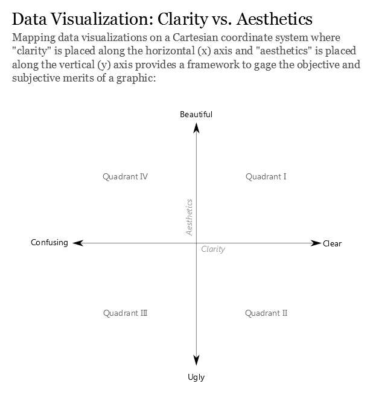

Code
pacman::p_load(ggrepel, patchwork,
ggthemes, hrbrthemes,
tidyverse, ggiraph, plotly,
patchwork, DT, dplyr, scales, forcats, dplyr, grid) Andre Ong Jia Kang
May 10, 2025
May 11, 2025
We are tasked with the below instructions for ‘Take-Home_Ex01_Part2’:
Part 2: Selecting one submission provided by your classmate, critic three good design principles and three areas for further improvement. With reference to the comment, prepare the makeover version of the data visualization.
During lecture, an article published by Ben Jones was shared as a framework to judge data visualization plots. I will be using this as a baseline to praise or critic the plots in this exercise.

The Four Quadrants:
I will be using the following classmate’s submission (Click the link below) for this activity. His data cleaning will be replicated in the initial steps to get the original plot.
Libraries:
Dataset:
We will keep to the original author’s code to replicate his/her plot.
Theme:
Using the original author’s theme.
Creating a Numeric Age Column & Age Grouping:
Column type created are integers to be used for plotting.
Below is the original plot (Plot 3) from the chosen classmate’s link. It might look smaller from the original link but the overall aesthetic remains the same.
df_pyramid <- df %>%
filter(AgeNum <= 90) %>%
mutate(Pop = ifelse(Sex == "Males", -Pop, Pop))
p6 <- ggplot(df_pyramid, aes(x = AgeNum, y = Pop, fill = Sex)) +
geom_col(width = 1) +
coord_flip() +
labs(title = "Population Pyramid", x = "Age", y = "Population") +
scale_y_continuous(labels = label_comma()) +
common_theme
p7 <- df %>%
group_by(Sex, AgeGroup) %>%
summarise(Pop = sum(Pop)) %>%
ggplot(aes(x = AgeGroup, y = Pop, fill = Sex)) +
geom_bar(stat = "identity", position = "dodge") +
labs(title = "Age Group Distribution by Gender", y = "Population") +
scale_y_continuous(labels = label_comma()) +
common_theme
(p6 / p7) + plot_layout(heights = c(1.3, 1))The gridlines for both the 1) Pyramid plot and 2) Bar charts help to guide the user on the axis references.
The colour code of males and females were consistent and easily distinguishable for both plots. I am instantly able to identify the gender from the plots.
The bar chart helps to provide a simple but direct comparison of the ranked categorical data. It describes the total population of each ‘Age groups’ where majority of the population are ‘Adults’.
The x-axis of the pyramid plot has a negative number for the population and the scaling is too large to identify the population number of each age.
Suggestion: This requires changing the x-axis to only positive values and changing the scale into thousands.
The bars in the pyramid plot is too clustered, where I am unable to distinguish the age groups clearly as all the ages are represented in the plot. Secondly, the Y-axis scale of only 4 digits does not clearly identify all the age groups for identification.
Suggestion: This can tidied by grouping the ages into ranges for better representation and also reduce the amount of the bars on the pyramid plot
For the bar chart plot, the ‘Adult’ group might be too bias as majority of the population falls under the range between ‘25 - 65 years old’. It would be better to increases the amount of groups from the initial 4 for a more accurate representation of the population groups. Secondly, the groups are not sorted properly making it confusing to identify which has the least population.
Suggestion: This can be adjusted by splitting the ‘Adult’ groups into ‘Young Adults’, ‘Middle-Aged Adults’ & ‘Older Adults’. Ensuring the groups are categorized as equal/fair as possible. The new groups are sorting according to increasing age groups for easier identification.
The Age column is not entirely numeric due to character values “90_and_Over”. I will directly address this by creating a new column called ‘AgeNum2’ and re-code those character values to “90” using string replacement. This will make the binning of new age ranges for the edited pyramid plot easier.
Binning into ranges:
I will bin the ages into incremental ranges of 5 using AgeNum column into ‘AgeNum2’.
age_breaks <- seq(0, 90, by = 5)
age_labels <- c(paste(seq(0, 80, 5), seq(4, 84, 5), sep = "-"), "85-89", "90+")
df <- df %>%
mutate(
AgeNum = ifelse(AgeNum == "90+", 90, AgeNum),
AgeNum = as.numeric(AgeNum),
AgeNum2 = cut(
AgeNum,
breaks = c(seq(0, 90, 5), Inf),
labels = age_labels,
right = FALSE
)
)Expanding Age Groupings:
Adding Another column ‘AgeGroup2’ by editing the Age ranges
Combining the additional code blocks above together with optimizing the original code. The below plot is derived.
df_pyramid <- df %>%
mutate(Pop = ifelse(Sex == "Males", -Pop, Pop))
p6 <- ggplot(df_pyramid, aes(x = AgeNum2, y = Pop, fill = Sex)) +
geom_bar(stat = "identity", width = 0.8) +
coord_flip() +
scale_y_continuous(
breaks = seq(-150000, 150000, 50000),
labels = abs(seq(-150, 150, 50))
) +
labs(
title = "Singapore Residents Pyramid by Age Cohort, 2024",
x = "Age group",
y = "Population (in thousands)"
) +
theme_minimal() +
theme(
plot.title = element_text(hjust = 0.5, face = "bold"),
axis.text.y = element_text(size = 10),
axis.title.x = element_text(margin = margin(t = 10))
)
p7 <- df %>%
group_by(Sex, AgeGroup2) %>%
summarise(Pop = sum(Pop)) %>%
ggplot(aes(x = AgeGroup2, y = Pop, fill = Sex)) +
geom_bar(stat = "identity", position = "dodge", width = 0.8) +
scale_x_discrete(limits = c(
"Children","Teenagers","Young Adults","Adults","Older Adults","Elderly"
)) +
labs(title = "Age Group Distribution by Gender", y = "Population", x = "Age Groups") +
scale_y_continuous(labels = label_comma()) +
common_theme +
theme(
plot.title = element_text(size = 14, hjust = 0.5, face = "bold"),
axis.title.x = element_text(size = 10, margin = margin(t = 4)),
axis.title.y = element_text(size = 10),
axis.text.y = element_text(size = 8),
axis.text.x = element_text(size = 8),
legend.title = element_text(size = 10),
legend.text = element_text(size = 8)
)
(p6 / p7) + plot_layout(heights = c(1.3, 1))With these changes to the original plots, we can visualize the Age and Population distribution much clearer.